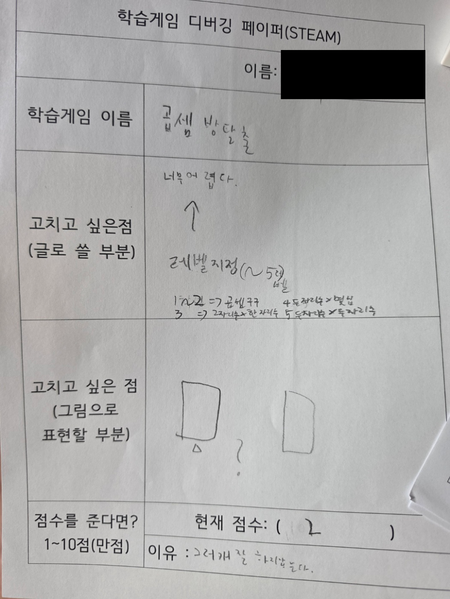

곱셈 방탈출 제작 기록
기획자는 해산물(3학년), 이번 체험자는 1학년입니다. 체험자의 이름은 공개하지 않습니다.
1학년이 직접 해 보고 남긴 디버깅 페이퍼
“너무 어렵다.” · 학생이 준 현재 점수: 2 / 10점
레벨을 나누어 쉬운 곱셈부터 시작하자는 제안입니다. 이 점수는 체험 학생의 평가이며 AI 평가 점수와 구분해 기록합니다.
| 학생이 적은 단계 | 문제 종류 |
|---|---|
| 1~2 | 곱셈구구 |
| 3 | 두 자리 × 한 자리 |
| 4 | 두 자리 × 몇십 |
| 5 | 두 자리 × 두 자리 |
‘레벨’을 방별 난이도로 적용할지, 별도 난이도 선택으로 적용할지 확인 중입니다.
이름 부분을 삭제한 공개용 사본입니다. 원본 사진은 사이트에 올리지 않았습니다.

처음 만든 곱셈 방탈출
방 5개, 정답 문 1개와 오답 문 1개, 오답이면 처음으로. 기본 문제는 두 자리 × 두 자리였습니다.